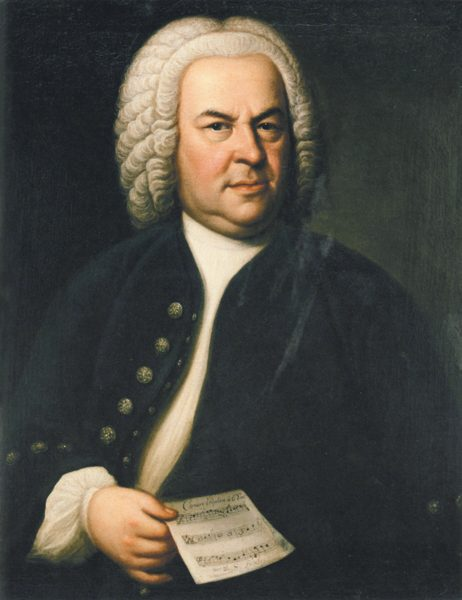

G線上のアリア
美しくどこか切ない名曲
クラシック音楽の世界へようこそ

ヨハン・セバスティアン・バッハ
1685-1750
「音楽の父」と呼ばれる、
バロック音楽の巨匠
バロック音楽を代表するドイツの作曲家です。教会音楽をはじめ、器楽曲や協奏曲など、数多くの作品を残しました。
生年1685年
没年1750年
出身ドイツ
美しくどこか切ない名曲

バッハのフーガの代表作 「あなたの髪の毛ありますか」とユニークな替え歌をつけたことで広く知られました。
イエス・キリストの受難(死に至る苦しみ)を描いた宗教音楽の傑作。壮大なオーケストレーションと深い感情表現が特徴です。
バッハの音楽は、まるで「音のパズル」
ひとつのメロディが始まると、別のメロディが追いかけるように入ってきます。
それぞれが別々に動いているようで、最後にはピッタリ重なり合う。
その厳密で美しい音の組み合わせが、バッハの大きな魅力です。